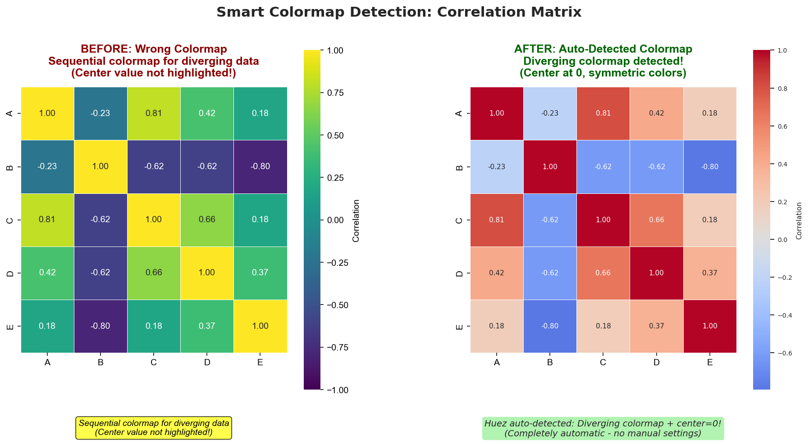

Smart Colormap Detection
Automatically detect whether data needs sequential or diverging colormaps.
The Problem
Choosing the wrong colormap can mislead interpretation:
{kind=link}
Top Left (Correlation Matrix): Data ranges [-1, 1] → auto-detects diverging colormap (coolwarm)
Top Right (Temperature Data): Data ranges [10, 40] → auto-detects sequential colormap (viridis)
Bottom: Symmetric vs. asymmetric distributions correctly identified
Why This Matters
Wrong Colormap = Wrong Message:
Correlation matrix with sequential colormap → center (zero) not highlighted → hard to see positive vs. negative
Temperature data with diverging colormap → artificial emphasis on midpoint → misleading
Traditional approach: Users must manually choose cmap=
Huez approach: Automatic detection based on data distribution
Colormap Types
Sequential Colormaps
When to use: Data with one-directional progression (0 to max)
Examples:
Temperature: 0°C to 100°C
Population density: 0 to 10,000/km²
Gene expression levels: 0 to 100
Visual: Single hue gradient (light → dark)
# Examples of sequential data
temperature = np.random.uniform(10, 40, (10, 10))
density = np.random.uniform(0, 1000, (10, 10))
counts = np.random.poisson(50, (10, 10))
Diverging Colormaps
When to use: Data centered at meaningful midpoint
Examples:
Correlation coefficients: -1 to +1 (centered at 0)
Change from baseline: -50% to +50% (centered at 0)
Temperature anomaly: -10°C to +10°C (centered at 0)
Visual: Two hues diverging from center (blue ← white → red)
# Examples of diverging data
correlation = np.corrcoef(np.random.randn(10, 100)) # [-1, 1]
changes = np.random.uniform(-50, 50, (10, 10)) # Centered at 0
anomalies = np.random.normal(0, 5, (10, 10)) # Centered at 0
Cyclic Colormaps
When to use: Periodic data (e.g., angles, time of day)
Examples:
Wind direction: 0° to 360°
Phase data: 0 to 2π
Hour of day: 0 to 24 (wraps around)
Visual: Colors at endpoints match (seamless loop)
Detection Algorithm
Huez uses multi-rule detection:
Rule 1: Crosses Zero
If data contains both negative and positive values:
if data_min < 0 and data_max > 0:
return "diverging"
Rule 2: Symmetric Range
If data is roughly symmetric around zero:
if abs(data_min + data_max) / (data_max - data_min) < 0.1:
return "diverging"
Example: [-8, 9] → symmetry = |(-8 + 9)| / (9 - (-8)) = 0.06 < 0.1 ✓
Rule 3: Mean/Median Position
If mean or median is in middle 30-70% of range:
range_position = (mean - data_min) / (data_max - data_min)
if 0.3 < range_position < 0.7:
return "diverging"
Rule 4: Known Range Patterns
If data matches known diverging patterns:
# Correlation coefficient pattern
if -1.1 < data_min < -0.9 and 0.9 < data_max < 1.1:
return "diverging"
Rule 5: Default
If none of above:
return "sequential"
Usage
Automatic Detection
Detection happens automatically with heatmaps:
import seaborn as sns
import numpy as np
import huez as hz
hz.use("scheme-1")
# Correlation matrix → auto-detects diverging
correlation = np.corrcoef(np.random.randn(10, 100))
sns.heatmap(correlation) # Uses coolwarm automatically
plt.show()
# Temperature data → auto-detects sequential
temperature = np.random.uniform(10, 40, (10, 10))
sns.heatmap(temperature) # Uses viridis automatically
plt.show()
Manual Detection
Detect colormap type for any data:
import huez as hz
import numpy as np
# Test different data types
correlation = np.corrcoef(np.random.randn(10, 100))
result = hz.detect_colormap(correlation, verbose=True)
print(f"Correlation matrix: {result}") # 'diverging'
temperature = np.random.uniform(0, 100, (10, 10))
result = hz.detect_colormap(temperature, verbose=True)
print(f"Temperature data: {result}") # 'sequential'
Note
The top-level function hz.detect_colormap() is equivalent to
huez.intelligence.detect_colormap_type(). Use whichever you prefer.
Override Detection
Force a specific colormap type:
hz.use("scheme-1")
# Force diverging colormap
cmap = hz.cmap(kind="diverging")
sns.heatmap(data, cmap=cmap, center=0)
# Force sequential colormap
cmap = hz.cmap(kind="sequential")
sns.heatmap(data, cmap=cmap)
Examples
Example 1: Correlation Matrix
import seaborn as sns
import pandas as pd
import numpy as np
import huez as hz
hz.use("scheme-1")
# Create correlation matrix
data = pd.DataFrame(np.random.randn(100, 8),
columns=[f'Var{i}' for i in range(8)])
corr = data.corr()
# Automatic diverging colormap
sns.heatmap(corr, annot=True, fmt='.2f',
center=0, vmin=-1, vmax=1)
plt.title('Correlation Matrix (Auto-Diverging)')
plt.show()
Example 2: Gene Expression
hz.use("scheme-1")
# Gene expression levels (0-100)
expression = np.random.uniform(0, 100, (20, 50))
# Automatic sequential colormap
sns.heatmap(expression, cmap=hz.cmap())
plt.title('Gene Expression (Auto-Sequential)')
plt.xlabel('Samples')
plt.ylabel('Genes')
plt.show()
Example 3: Temperature Anomaly
hz.use("scheme-1")
# Temperature anomaly (change from baseline)
anomaly = np.random.normal(0, 2, (12, 30))
# Automatic diverging colormap (centered at 0)
sns.heatmap(anomaly, center=0)
plt.title('Temperature Anomaly (Auto-Diverging)')
plt.xlabel('Days')
plt.ylabel('Months')
plt.show()
Technical Details
Data Preprocessing
Before detection, data is cleaned:
def detect_colormap_type(data, verbose=False):
# Remove NaN and inf
clean_data = data[np.isfinite(data)]
if len(clean_data) == 0:
return "sequential" # Fallback
# Extract statistics
data_min = np.min(clean_data)
data_max = np.max(clean_data)
data_mean = np.mean(clean_data)
data_median = np.median(clean_data)
# Apply detection rules...
Detection Rules (Complete)
def detect_colormap_type(data, verbose=False):
clean_data = data[np.isfinite(data)]
data_min = np.min(clean_data)
data_max = np.max(clean_data)
data_mean = np.mean(clean_data)
data_median = np.median(clean_data)
data_range = data_max - data_min
# Rule 1: Crosses zero
if data_min < 0 and data_max > 0:
return "diverging"
# Rule 2: Symmetric around zero
if data_range > 0:
symmetry = abs(data_min + data_max) / data_range
if symmetry < 0.1:
return "diverging"
# Rule 3: Mean/median in middle
mean_pos = (data_mean - data_min) / data_range
median_pos = (data_median - data_min) / data_range
if 0.3 < mean_pos < 0.7 or 0.3 < median_pos < 0.7:
return "diverging"
# Rule 4: Correlation coefficient pattern
if -1.1 < data_min < -0.9 and 0.9 < data_max < 1.1:
return "diverging"
# Default: Sequential
return "sequential"
Verbose Mode
See detection reasoning:
from huez.intelligence import detect_colormap_type
result = detect_colormap_type(data, verbose=True)
Output:
Colormap Detection:
-------------------
Data range: [-0.95, 0.98]
Mean: 0.02
Median: 0.01
✓ Rule 1: Crosses zero (min < 0, max > 0)
→ Detected: diverging
Best Practices
When to Override
Override detection when:
Conceptual meaning: Data has meaningful center even if not statistical
# Profit/loss: conceptually centered at 0 # even if data is [100, 1000] cmap = hz.cmap(kind="diverging") sns.heatmap(profit_data, cmap=cmap, center=0)
Visual emphasis: Want to highlight specific value
# Emphasize target value (e.g., 37°C body temp) cmap = hz.cmap(kind="diverging") sns.heatmap(body_temp, cmap=cmap, center=37)
Consistency: Matching other plots in publication
# Force same colormap type across figures cmap = hz.cmap(kind="sequential")
Always Specify Center
For diverging data, explicitly set center:
# ✅ Good
sns.heatmap(data, center=0, vmin=-1, vmax=1)
# ❌ Bad: center not specified
sns.heatmap(data) # May auto-center incorrectly
Add Colorbar Label
Always label colorbars:
ax = sns.heatmap(correlation, cbar_kws={'label': 'Correlation'})
# Or manually
cbar = ax.collections[0].colorbar
cbar.set_label('Temperature (°C)', rotation=270, labelpad=20)
Comparison with Manual Selection
Scenario |
Manual Approach |
Huez Auto-Detection |
|---|---|---|
Correlation matrix |
|
Automatic diverging |
Temperature data |
|
Automatic sequential |
Mixed datasets |
Need to check each |
Always correct |
Code maintenance |
Fragile |
Robust |
API Reference
- huez.intelligence.detect_colormap_type(data, vmin=None, vmax=None, verbose=True)[source]
Automatically detect the most appropriate colormap type for data.
This function analyzes data characteristics to recommend: - “sequential”: Data with a natural ordering from low to high (e.g., 0-100) - “diverging”: Data with a meaningful center point (e.g., correlation -1 to 1) - “cyclic”: Data that wraps around (e.g., angles 0-360)
- Parameters:
- Returns:
“sequential”, “diverging”, or “cyclic”
- Return type:
String indicating colormap type
Examples
>>> import numpy as np >>> # Correlation matrix (-1 to 1) >>> data = np.array([[1.0, 0.8, -0.6], [0.8, 1.0, -0.4], [-0.6, -0.4, 1.0]]) >>> detect_colormap_type(data) 'diverging'
>>> # Positive-only data >>> data = np.random.rand(10, 10) * 100 >>> detect_colormap_type(data) 'sequential'
Parameters
data(np.ndarray): 2D array of data valuesverbose(bool): If True, print detection reasoning (default: False)
Returns
str:"sequential","diverging", or"cyclic"
Examples
Basic usage:
import numpy as np
from huez.intelligence import detect_colormap_type
data = np.random.uniform(-1, 1, (10, 10))
cmap_type = detect_colormap_type(data)
print(cmap_type) # 'diverging'
With verbose output:
cmap_type = detect_colormap_type(data, verbose=True)
Further Reading
Moreland, K. (2009). “Diverging Color Maps for Scientific Visualization”
Ware, C. (2012). Information Visualization. Chapter 4: Color
Next Steps
Learn about Intelligent Color Expansion for many categories
Check Colorblind Accessibility for colorblind-safe colormaps
Read Best Practices for heatmap tips